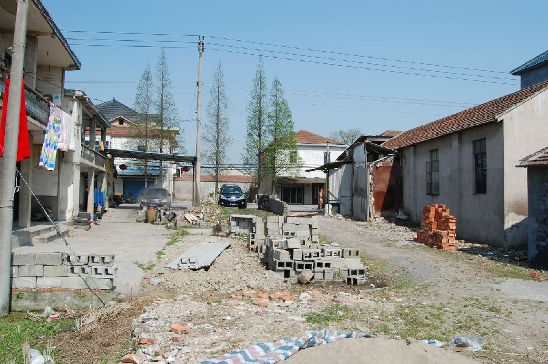

嘉兴市文物保护网 · 市级文物保护点 · 2020-11-09 · 原文

韩家浜遗址位于嘉兴市南湖区新丰镇竹林村幼儿园内及周边。该遗址原面积80000平方米（800×100）分布在水田和高地中，因新建民房，经常动土，遗址破坏日益严重，现存面积3600平方米。该遗址曾出土陶器以泥质黑陶、灰陶为主，采集标本器有：壶、豆、鼎、镂空豆把、双鼻圈足壶、提梁壶等，石器有石斧等完整器数件，可判断属新石器时代良渚文化遗址。遗址出土器物文化类型较典型，具有较高的历史和科学价值。1992年公布为嘉兴市文物保护点。